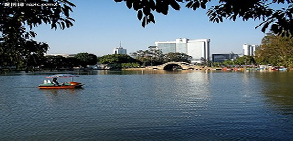

杭州一日游 杭州二日游 杭州三日游攻略

杭州一日游攻略。
西湖景区，基本都免费
9：00开始游览沿湖北向漫步至断桥
9：40抵达断桥
10：20步行1.5km抵达中山码头坐正规的电瓶船上岛（三潭印月），选择在花港观鱼码头下（船票+上岛票=45元/人）
12：00花港码头下船，游览花港观鱼，40分钟，
12：45步行抵达雷峰塔（门票40/人，游览一小时左右）
14：00也可以雷峰塔游览好后继续沿湖漫步2.2km 景色仍美不胜收 沿途可以看到杭州三怪之一的长桥 梁祝读书的万松书院 纪念五代十国皇帝的钱王祠 还有十景之一的柳浪闻莺...这样你到柳浪闻莺也差不多五点了 再前行几百米有个青藤茶楼 可以去感受一下我们杭州的茶文化 看看杭州人是怎么休闲的呵呵 里面只需点一杯茶 其余小吃面饭点心冷饮水果等都有了 自助式 第二天再去河坊街。但如果你觉得累了不想走那么多路了也可以从雷峰塔出来后去净CI寺，14：40净CI寺（雷峰塔对面）公交站上车 808（1.5元/人）或y7（2元/人）吴山广场下车，感受吴山天风，逛吴山广场，漫步十里皇街第一街——河坊街后延吴山广场西向漫步10分钟至湖边，游览柳浪闻莺，后继续沿湖赏景至青藤茶楼。
杭州二日游攻略！
如果你直接游览 火车站出来k7是终点站
10：火车站—k7—断桥（7站路，k7城站终点站），2元/人
10：40抵达断桥，（如果你想去看看正当季的曲院风荷，就原地乘车k7岳庙下车，游好岳庙码头上船，不算用餐时间顺延一小时，可以这里肯德基解决中餐）
11：20步行1.5km抵达中山码头坐正规的电瓶船上岛（三潭印月），选择在花港观鱼码头下（船票+上岛票=45元/人）
13：00花港码头下船，游览花港观鱼，40分钟，
13：45步行抵达雷峰塔（门票40/人）
15：00净寺（雷峰塔对面）公交站上车 808（1.5元/人）或y7（2元/人）吴山广场下车，或y6（3元/人）到高银街下车
15：40漫步河坊街至小吃街
16：20享受小吃
也可以雷峰塔游览好后继续沿湖漫步2.2km 景色仍美不胜收 沿途可以看到杭州三怪之一的长桥 梁祝读书的万松书院 纪念五代十国皇帝的钱王祠 还有十景之一的柳浪闻莺...这样你到柳浪闻莺也差不多五点了 再前行几百米有个青藤茶楼 可以去感受一下我们杭州的茶文化 看看杭州人是怎么休闲的呵呵 里面只需点一杯茶 其余小吃面饭点心冷饮水果等都有了 自助式 第二天再去河坊街 反正如果你住我说的这些酒店的话 离那里都是十来分钟的路 也近的
对了 千万不要做那种手摇船 80一小时而且得两小时起 挺黑的摇着摇着就给你摇到湖里面一个叫毛家埠卖珍珠的地方去了...谨慎啊 还有不懂的问我呵呵
D2天有很多地方可以去 比如可以去杭州乐园High一天呵呵 那里有很多机动游戏 很刺激 一票到底 还有水上乐园的 不过如果去记得带泳具 否则不让下水呦 延安路龙翔桥那里有515区间车直接到的 里面很多机动游戏 会让你们激动不已
还有西溪湿地啊 宋城啊 好多可以去的地方 看你对哪里感兴趣了
杭州乐园。100元。
宋城。不看表演门票80，看表演180.
西湖电瓶船上三潭印月（一元人民币后面的图案）45元。
除了雷峰塔45，净寺，虎跑梦泉（泡龙井茶是西湖双绝）门票15，六和塔门票15，黄龙洞门票15，还有飞来峰和灵隐寺30+35，其他基本都免费的了。
一般来西湖的都看老十景。
苏堤春晓 三潭印月 曲院风荷 平湖秋月 柳浪闻莺 花港观鱼 雷锋夕照 断桥残雪 这些沿着西湖一圈下来 。
杭州三日游攻略！
第一天：游览苏堤，白堤，平湖秋月，断桥，再坐船游览湖心亭，三潭印月，然后去逛逛柳浪闻莺，聆听南屏晚钟，晚上则可以去湖滨欣赏音乐喷泉，还可以去西湖新天地坐坐；
第二天：先去灵隐寺上香，然后去游览杨公堤，那里宁静幽雅，湖光山色，风景美不胜收。精致的景点有：赵公堤，上香古道，毛家埠，杭州 花圃，曲院风荷，浴鹄湾，乌龟潭，于谦祠，武状元坊，花港观鱼等。还可以去毛家埠喝喝茶，吃点新鲜可口的农家饭，而且毛家埠那里有青山，湖泊，茶园，绿树，鲜花，风景绝佳。晚上可以去逛逛河坊街，品尝一下杭州的名小吃或者面食。
当然，两天是不能完全领略杭城的魅力的，如果有第三天，那就再好不过，走走西湖的外围景点，九溪烟树，虎跑梦泉，龙井问茶，梅岭春早，六和听涛，这些新十景的魅力其实各有特色，不输经典。晚上可以去看“宋城千古情”，“印象西湖”等演出。